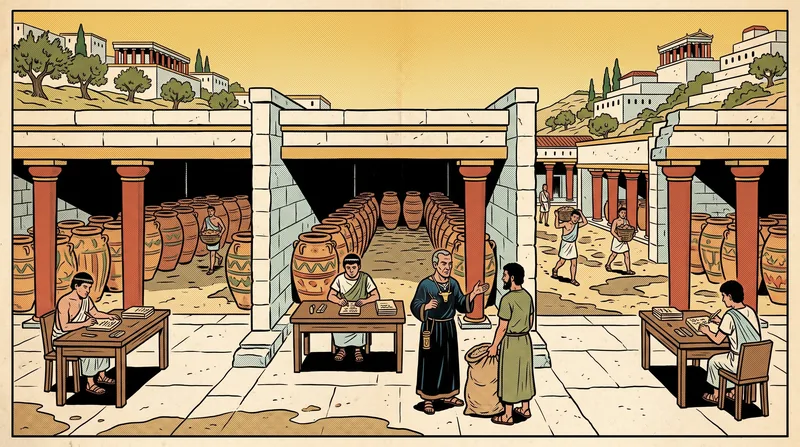
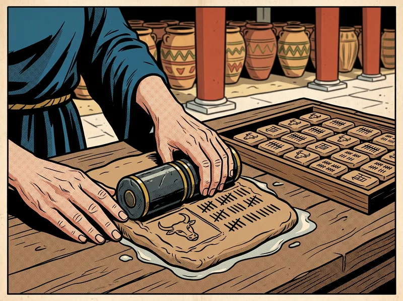
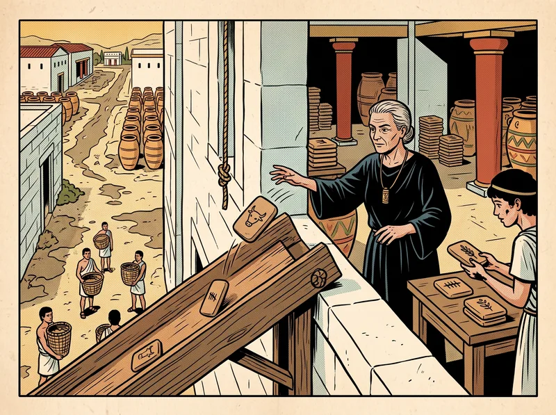
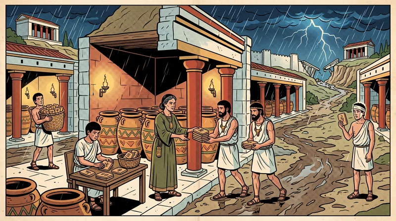
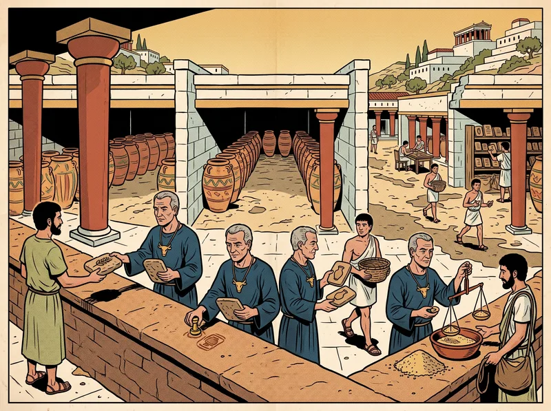
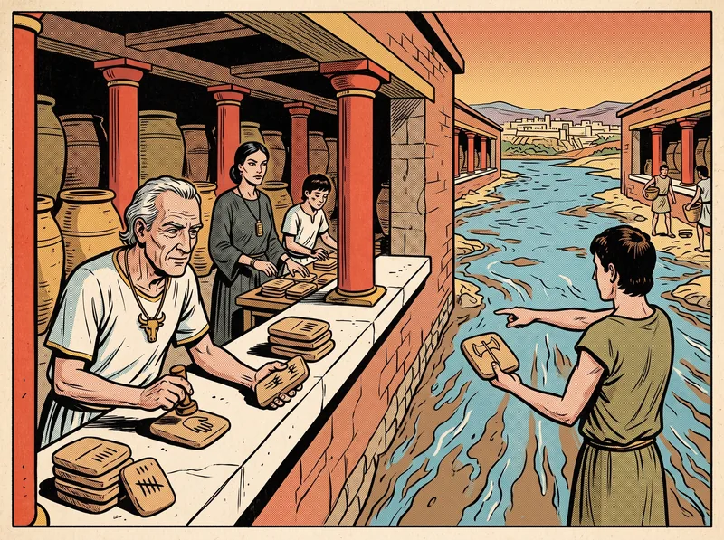
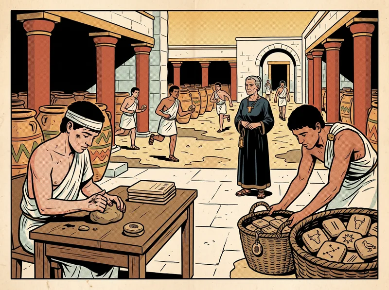
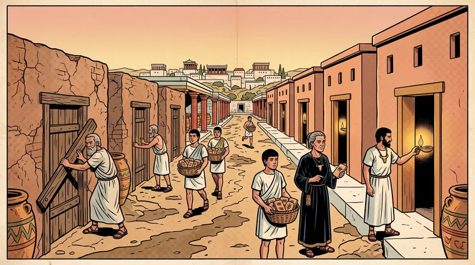

The Ledger of Many Decrees
Oki & Liskov, "Viewstamped Replication," 1988; Multi-Paxos
After B. M. Oki & B. H. Liskov, “Viewstamped Replication,” PODC ’88, 8–17; and B. Liskov & J. Cowling, “Viewstamped Replication Revisited,” MIT CSAIL technical report (2012). Retold as the account books of the granary of Knossos.
Volume V passes one decree, and then, almost as an afterthought, a ledger of them. An empire needs the ledger. This volume concerns the other people who built one.
Two account books were found together in the palace storerooms at Knossos. The first, written by the clerks Ὄκι and Λίσκοφ, describes how the granary kept several identical copies of its records so that grain could still be sold when a storehouse burned or a storm cut the palace off from the harbour. It is written in the dry hand of people who were keeping a granary, not telling a story, and its method is tangled up with the granary’s rules for selling grain on credit. It was deposited in the same years that the Paxon Parliament’s account was being written, by clerks who had never heard of Paxos, and it attracted almost no attention whatever.
The second book, written a generation later by Λίσκοφ and her apprentice Κάουλινγκ, restates the method on its own, without the grain, simplified and improved. I translate both, the older first. The evidence they offer — that it was the togas, not the geometry, that made the Paxos scrolls famous — I leave to the reader.
— The Translator
The Granary of Knossos

1.1 · Grain When It Is Needed
A granary is useful only if it is open when the grain is needed. The clerks give the example of the ship-berth office, where the failure of a single clerk could prevent the selling of passages for a considerable time, “causing a loss of revenue and passenger goodwill.” The remedy is to keep more than one copy of important records, so that the granary remains usable even when some copies cannot be reached — because a storehouse has burned, or its clerk has collapsed, or a storm has cut off the road.
The granary was organized into offices, each at a single storehouse, each holding its own records and the rules for changing them; no office could touch another’s records, but could only send it requests by runner. The clerks replicated whole offices. A replicated office is a group of copies called cohorts — usually three or five — which together behave as a single office. The set of cohorts is the group’s configuration.
The clerks were explicit about the weather. Clerks may collapse, but they do not lie (they cite the generals of Volume II to say what they are not assuming). Runners may lose, delay or duplicate requests or deliver them out of order. Roads may wash out, splitting the storehouses into groups that cannot reach one another. But collapsed clerks eventually recover, and roads are eventually repaired.
1.2 · The Steward and the Copyists
Their method was the long-established primary copy technique. One cohort is designated the primary — the steward. It does all the work of selling grain and notifies the others, the backups, of what it has done; the backups are essentially passive. When a cohort collapses or is cut off, or recovers, or a road is repaired, the cohorts reorganize and choose a new steward if necessary. This reorganization is a view change.
A view is a set of cohorts that can (or could) communicate, together with an indication of which is the steward. Every view must contain a majority of the configuration. Each view has a unique, totally ordered viewid. Grain is sold only in active views; if a majority does not accept a proposed new view, the cohorts stay in their old views, which become inactive.
The old primary-copy method worked only if a collapsed clerk could be told apart from a washed-out road. In general, the clerks pointed out, it cannot — and their method does not need to.
Viewstamps

A view says who can talk to whom. It says nothing about which sales the storehouses know of. For that the clerks used timestamps — simple counts, generated by the steward, unique and ordered within a view. Each time the steward needs to tell the backups something — a sale finished, a sale being prepared, a sale committed — that is an event, and it receives the next timestamp.
Because a timestamp means something only within one view, the clerks combined the two into a viewstamp: a timestamp joined to the viewid of the view in which it was issued, written v.id and v.ts. Each cohort keeps a history, a sequence of viewstamps each from a different view, with this promise:
For each viewstamp v in a cohort’s history, the cohort’s records reflect event e from view v.id if and only if e’s timestamp is less than or equal to v.ts.
Rather than write every event to a fireproof strongroom, the steward keeps a communication buffer, a queue of event records sent to the backups in timestamp order. The buffer reliably delivers records to every backup in the view; if it cannot, a collapse or washed-out road has occurred and will cause a view change. The steward can add a record (to be delivered in due course) or force the buffer up to some viewstamp — waiting until a sub-majority of backups know every event up to it. A sub-majority is one fewer than a majority of the configuration; with the steward itself, it makes a majority.

The correctness of the granary rests on two halves fitting together. Selling guarantees that a sale may be committed only if all its events are known to a majority of cohorts. The view change guarantees that events known to a majority survive into every later view.1
Selling Grain Twice Over
The first account book assumes the granary sells grain as atomic transactions — a merchant’s purchase may involve several offices, and must either happen entirely or not at all, and concurrent purchases must be equivalent to some serial order on unreplicated records. Offices lock the records they read or change, keep tentative versions, and install them when the purchase commits.
Each time an office finishes a request on behalf of a purchase, its steward adds a “completed-call” record to the buffer and returns the viewstamp it received, and the purchase collects these as it goes, in a set of (office, viewstamp) pairs the clerks called the pset. When a purchase finishes, the merchant’s own steward acts as coordinator of two-phase commit and sends the pset in every prepare message.
- The office’s steward checks that the pset is compatible with its history: for every pair (g, vs) naming its own office, some viewstamp v in its history has v.id = vs.id and vs.ts ≤ v.ts. That is, the office still knows every request it handled for this purchase.
- If so, it forces the buffer up to the latest such viewstamp, releases read locks, and replies prepared.
- If not — some request’s effects were lost in a view change — it refuses, and the purchase aborts.
If all participants prepare, the coordinator adds a “committing” record, forces its whole buffer so the decision survives a change of its steward, and sends commit messages. A merchant who gets no reply to a request must abort, because he cannot know whether re-sending the request to a new steward would do it a second time — the granary must never sell the same grain twice over. The book remarks that this can waste a great deal of work, and proposes nested purchases, where only the failed part is abandoned and retried.2
Even a purchase that only read an office’s records must force that office’s buffer when preparing. A view change may have happened without the old steward knowing, and a new steward in another storehouse may already be selling. Without the force, the old steward could agree to prepare even though the read locks were lost — allowing another merchant to change what this one had read.
Changing Stewards
Cohorts exchange periodic “I’m alive” tablets. A cohort that notices it can no longer reach someone in its view, or can now reach someone it could not, or has just recovered from collapsing, starts a view change. It becomes the view manager; the others become underlings.
The manager makes a new viewid — a pair of a count larger than any it has seen and its own name, so no two managers ever make the same one — and sends invitations. A cohort accepts only invitations with a viewid larger than any it has seen. A cohort whose records are intact sends a normal acceptance, with its latest viewstamp and whether it was steward. A cohort that has collapsed and lost its records sends a crashed acceptance, with only its viewid.

A new view can be formed only if a majority accept and some cohort among them knows every event forced in earlier views. The book gives an example. Three cohorts, A, B and C, are in a view with A as steward. A commits a sale, forcing its records to B but not yet to C. Then A collapses and recovers, forgetting its records, and a washed-out road cuts off B. A and C are a majority — but A has forgotten the sale and C never knew it. No view may be formed until the road is repaired.
A majority of cohorts have accepted, and
- a majority of cohorts accepted normally; or
- crash-viewid < normal-viewid; or
- crash-viewid = normal-viewid, and the steward of view normal-viewid accepted normally.
Here crash-viewid is the largest viewid in a crashed acceptance, and normal-viewid the largest in a normal one.
Condition 1 ignores crashed acceptances when there are enough normal ones; condition 2 ignores them if they come from older views; condition 3 ignores them if the steward of their view has answered, since a steward always knows at least as much as any backup. If the view can be formed, the cohort with the largest viewstamp becomes steward — the old steward if possible, which minimizes disruption. This works because records are sent in timestamp order: a cohort with a later viewstamp for some view knows everything that a cohort with an earlier one knows. The new steward starts its buffer with a “newview” record carrying the view, the history and the records.
The book notes several things. Only one round of messages is needed when the manager was the steward, one round and one message otherwise. Several simultaneous managers are tolerated; the highest viewid wins. An old steward, cut off and unaware, may continue to answer merchants for a while, but can never prepare or commit a sale, since it cannot force its buffer. And managers and underlings should wait generously before giving up on one another, or view changes will chase each other for ever.3
The Revised Account Book
The second book begins by saying what it changes. It presents the method apart from any granary business, so that the method can be seen. It is simpler and faster, borrowing some improvements from the later citadel of Volume VII. It uses no strongroom at all, relying instead on the copies themselves for persistence. And it adds a way to change the membership of the group.
It also names, plainly, how the method relates to Paxos: it was developed at about the same time, without knowledge of it. It is a protocol for replicating an office rather than for choosing a value, and it uses, as a part, a procedure for agreement very similar to the Synod’s. And unlike the Synod as then described, it never needed to write to a strongroom while agreeing.
5.1 · Why 2f + 1 Storehouses
A group handles up to f collapsed cohorts with 2f + 1 cohorts — the fewest possible for collapses in an asynchronous sea. Each step must be carried out without waiting for f cohorts, who may have collapsed. But those f may merely be slow, and f of the ones who did answer may collapse next. So each step must be processed by f + 1 cohorts, so that at least one who knows about it survives. These f + 1, with the f who may not answer, make 2f + 1.
A group of f + 1 is a quorum, and everything depends on quorum intersection: the quorum that carried out one step must share a member with the quorum available for the next. A larger group gains nothing for the same f, because it needs larger quorums.
Each cohort keeps: the configuration (its storehouses, in a fixed order); its own number; the current view-number; its status — normal, view-change, or recovering; the op-number of the latest request it has received; a log of requests in their assigned order; the commit-number of the latest committed request; and a client-table recording each merchant’s latest request number and, if it has been carried out, the result. The steward is not recorded at all: it is computed from the view-number, round-robin through the configuration.
5.2 · An Ordinary Day at the Granary

- A merchant sends ⟨REQUEST op, c, s⟩ to the steward: the operation, his own name c, and his request number s.
- If s is not larger than the client-table’s entry, the steward drops it (re-sending the old result if it was this merchant’s latest).
- Otherwise the steward advances the op-number, appends the request to its log, updates the client-table, and sends ⟨PREPARE v, m, n, k⟩ to the others: view-number, the merchant’s message, op-number, commit-number.
- A backup accepts PREPAREs in op-number order: it waits until it has every earlier request (fetching them if need be), then advances its op-number, appends the request, updates its client-table, and sends ⟨PREPAREOK v, n, i⟩.
- When the steward has f PREPAREOKs from different backups, the operation and all earlier ones are committed. After executing all earlier ones, it executes this one, advances its commit-number, and sends ⟨REPLY v, s, x⟩ to the merchant.
- The steward tells backups of commits in its next PREPARE, or, if idle, in ⟨COMMIT v, k⟩.
- A backup that learns of a commit executes the operation once it has it and all earlier ones — but does not reply to the merchant.
Every message carries the sender’s view-number. A cohort processes only messages for its own view: from an older view it drops them; from a newer one it first catches up. A merchant who hears nothing re-sends to every storehouse, so his request reaches a new steward if there is one. Nothing is written to a strongroom.
When the Steward Falls Silent
Backups expect to hear from the steward regularly — PREPAREs, or COMMITs when idle. If a timeout passes in silence, they change views. The requirement is that every operation that has been executed anywhere survives into the new view in the same position. An operation is executed only after it commits, and it commits only when it is in the logs of f + 1 cohorts. So a view change that consults the logs of f + 1 cohorts cannot miss it.
- A cohort that notices the need — by its own timer, or on hearing of a higher view — advances its view-number, sets status to view-change, and sends ⟨STARTVIEWCHANGE v, i⟩ to all.
- On receiving STARTVIEWCHANGE for its view-number from f others, it sends ⟨DOVIEWCHANGE v, l, v′, n, k, i⟩ to the new view’s steward: its log l, the latest view v′ in which its status was normal, its op-number and commit-number.
- When the new steward has f + 1 DOVIEWCHANGEs (including its own), it adopts the log with the largest v′, breaking ties by the largest n; takes the largest commit-number; sets status to normal; and sends ⟨STARTVIEW v, l, n, k⟩.
- It begins accepting requests, and executes and replies to any committed operations it had not executed.
- Other cohorts, on STARTVIEW, replace their logs, set their numbers and status, send PREPAREOKs for uncommitted operations, and execute what is committed.
Operations that had not committed may survive too, which is harmless. But an operation that was being prepared may be missed by every cohort consulted — say operation 25 — and the new steward may give number 25 to something else. The later view prevails. The first book solved this with viewstamps, keeping at each position the request with the higher ⟨view, op-number⟩; the second takes the log from the latest view in which a cohort was normal and ignores logs from earlier views. It was the viewstamps, the second book says, that gave the method its name.

Any operation committed in view v is known to f + 1 cohorts, each also knowing every earlier operation. The new view starts from the most recent log among f + 1 cohorts. Since none of them accepts PREPAREs from the old steward after sending DOVIEWCHANGE, that most recent log contains the latest operation committed in v and all before it.
The book insists that the clause about refusing the old steward is crucial. Without it the granary could have two active stewards — the old one, merely slow or cut off, and the new. A cohort that sent its log to the new steward and then a PREPAREOK to the old could let the old steward commit an operation the new one never hears about. The method is live whenever f + 1 uncollapsed cohorts, including the steward, can communicate — and more generally, the book says, liveness depends on setting the timeouts well.
The Clerk Who Forgot
A cohort that recovers from collapsing must not take part until it knows a state at least as recent as when it collapsed. If it rejoined sooner — say, forgetting that it had prepared some operation — that operation might be known to fewer than a quorum even though it committed, and a view change could lose it. Writing everything to a strongroom before every message would solve this, but slowly, and unnecessarily: the state is also held by the other cohorts. With storehouses that fail independently — different buildings, their own lamps, different towns — the second book needs no strongroom at all.

- The recovering cohort i sets status to recovering and sends ⟨RECOVERY i, x⟩ to all, where x is a fresh nonce.
- A cohort j replies only if its status is normal, with ⟨RECOVERYRESPONSE v, x, l, n, k, j⟩ — including its log and numbers only if it is the steward.
- The recovering cohort waits for f + 1 responses bearing its nonce, including one from the steward of the latest view it learns of, takes that steward’s state, and returns to normal.
The nonce prevents a recovering cohort from mixing replies to an earlier recovery with replies to this one. Curiously, recovery needs f + 2 cohorts to communicate — but it is still live, since a cohort counts as failed until it has recovered, so at least f + 1 others must be up. In effect, the volatile state of f + 1 cohorts serves as a strongroom.
This is also why the view change needs its preliminary round of STARTVIEWCHANGE. The book gives the scenario. Three cohorts, view v, steward r1. Before collapsing, r3 sent a DOVIEWCHANGE to r2, which is delayed on the road. r3 recovers in view v from r1 and r2, and starts sending PREPAREOKs to r1 for operations r2 never sees. Then the old DOVIEWCHANGE arrives and r2 starts view v + 1 — without the operations committed after r3 recovered. The STARTVIEWCHANGE round ensures that when a view change happens, f + 1 cohorts already know it is in progress, so a recovering cohort always recovers into that view or a later one.4
Practical Matters of the Granary
The second book spends many columns on the practicalities that the first never reached.
Uncertain operations. Copies agree only if operations are deterministic, but a record of “when this grain was last weighed” read from each storehouse’s own water-clock would diverge. The steward predicts such values — from its own clock, or as a fixed function of values gathered from f backups — and stores the prediction in the log with the request.
Merchants who forget. A merchant who collapses must restart with a larger request number; he fetches his latest from the storehouses and adds two, in case a request he sent just before collapsing is still on the road.
Long ledgers. Every so many operations — a hundred or a thousand — each storehouse takes a checkpoint of its records, noting the op-number it reflects, and may then discard the older log (keeping some extra, in case a recovering clerk needs it). A recovering clerk fetches the records from another storehouse by comparing a tree of fingerprints over the tablets — the book names the method after Μέρκλε — so it copies only tablets that differ, and then fetches the log from that checkpoint on. A slow but uncollapsed clerk catches up by state transfer: GETSTATE, answered by NEWSTATE with the log it is missing. If it has learned of a newer view, it first discards any uncommitted suffix, which may have been reordered.
Small view-change messages. Rather than whole logs, DOVIEWCHANGE carries only the last entry or two; the new steward asks for more in the rare case it needs it.
8.1 · Economies
- Witnesses. Of 2f + 1 storehouses, only f + 1 need hold grain and records; the other f are witnesses, needed only for view changes and recovery.
- Batching. A busy steward runs the protocol once for a whole basket of requests.
- Reads at the steward. A steward may answer reads alone — but a cut-off old steward might answer from stale records. So it answers only while it holds leases from f backups, and a new view begins only after the leases of f + 1 participants have run out, assuming water-clocks run at roughly the same rate.
- Reads at backups. If staleness is acceptable, backups may answer reads, provided the merchant tells them how far his own last write got.
8.2 · Moving the Granary

Finally, the second book lets the group itself change — to replace a storehouse that burned, move to better buildings, or change f. An administrator sends a RECONFIGURATION request naming the new storehouses; it runs through normal operation in the old group and is the last request of its epoch. The steward stops accepting other requests, and on commit sends STARTEPOCH to the new storehouses, which fetch the state and begin in view 0 of the new epoch. Old storehouses keep answering state-transfer requests until f′ + 1 new ones report EPOCHSTARTED, and only then close. The new epoch starts at view 0, the book explains, because STARTEPOCH may come from old stewards in different views; inheriting their view-numbers could produce two stewards in the new group.
The Standing Consul of Paxos
For comparison, the translator adds what the Paxon Parliament did with the same problem (Volume V, Chapter III). The Synod passes a single decree in two phases: a ballot leader first gathers promises and earlier votes from a majority, then asks a majority to vote. The Parliament runs one Synod for each numbered decree in the ledger — but a president who stays in office performs the first phase only once, for all future decrees at once, and then passes each decree with a single round. The first phase becomes, in effect, the election of a standing consul.
The two institutions are strikingly alike. The Paxon president is the Knossian steward; the ballot number is the view-number; gathering the latest votes from a majority is gathering logs in DOVIEWCHANGE and taking the one from the latest view; a single round per decree is PREPARE and PREPAREOK. The editor of the Paxon manuscript remarked that the Knossian view-management protocol “seems to be equivalent” to the Paxon one.
They differ in one freedom. Each Paxon decree is an independent Synod, so decree 7 may be passed while decree 5 is still contested, and the ledger may have gaps that readers must wait to see filled. Knossian backups accept PREPAREs strictly in order; the second book notes that out-of-order acceptance is possible but brings no great benefit and complicates the view change. That freedom, and the gymnastics required to explain it, are what the monks of Volume IX will abolish — and the monastery’s rule is a closer descendant of the Knossos account books than of anything written on Paxos.
Relevance to Computer Science
| At Knossos | In the papers |
|---|---|
| Office, group, cohort | Module, module group, replica |
| Steward / copyists | Primary / backups |
| Steward’s term, new election | View, view change |
| Viewstamp | ⟨viewid, timestamp⟩ (1988); ⟨view-number, op-number⟩ (2012) |
| Communication buffer; forcing it | Ordered event stream to backups; waiting for a sub-majority |
| Purchase, pset, Argus | Atomic transaction, participant set, the Argus system |
| Crashed acceptance | Replica that lost volatile state |
| Strongroom | Stable storage / disk |
| Thumbprint token | Nonce in the RECOVERY message |
| Witnesses, leases, epochs | Harp witnesses, leases (Gray & Cheriton), reconfiguration epochs |
Viewstamped Replication is a leader-based state machine replication protocol for crash faults with 2f + 1 replicas, invented independently of and at about the same time as Paxos. The 2012 version is often recommended as one of the clearest complete descriptions of a practical replication protocol, including recovery without disk and reconfiguration. Its structure — normal operation, view change, recovery — carried over into PBFT (Volume VII), which Liskov co-designed, and its log discipline (backups accept operations only in order, and the new leader adopts the most up-to-date log) is close to Raft’s (Volume IX).
References
- Castro, M. and Liskov, B. 2002. Practical Byzantine fault tolerance and proactive recovery. ACM Transactions on Computer Systems 20, 4 (Nov.), 398–461.
- El Abbadi, A., Skeen, D., and Cristian, F. 1985. An efficient, fault-tolerant protocol for replicated data management. In Proceedings of the 4th ACM Symposium on Principles of Database Systems.
- Gifford, D. K. 1979. Weighted voting for replicated data. In Proceedings of the 7th ACM Symposium on Operating Systems Principles, 150–162.
- Gray, C. and Cheriton, D. 1989. Leases: An efficient fault-tolerant mechanism for distributed file cache consistency. In Proceedings of the 12th ACM Symposium on Operating Systems Principles, 202–210.
- Lamport, L. 1998. The part-time parliament. ACM Transactions on Computer Systems 16, 2 (May), 133–169.
- Liskov, B. 1988. Distributed programming in Argus. Communications of the ACM 31, 3 (March), 300–312.
- Liskov, B. and Cowling, J. 2012. Viewstamped replication revisited. Technical report, MIT Computer Science and Artificial Intelligence Laboratory.
- Liskov, B., Ghemawat, S., Gruber, R., Johnson, P., Shrira, L., and Williams, M. 1991. Replication in the Harp file system. In Proceedings of the 13th ACM Symposium on Operating Systems Principles, 226–238.
- Oki, B. M. and Liskov, B. H. 1988. Viewstamped replication: A new primary copy method to support highly-available distributed systems. In Proceedings of the 7th ACM Symposium on Principles of Distributed Computing, 8–17.
🏛️ Foundational Research Papers
The modern mathematical proofs that inspired this volume are preserved in the archive: